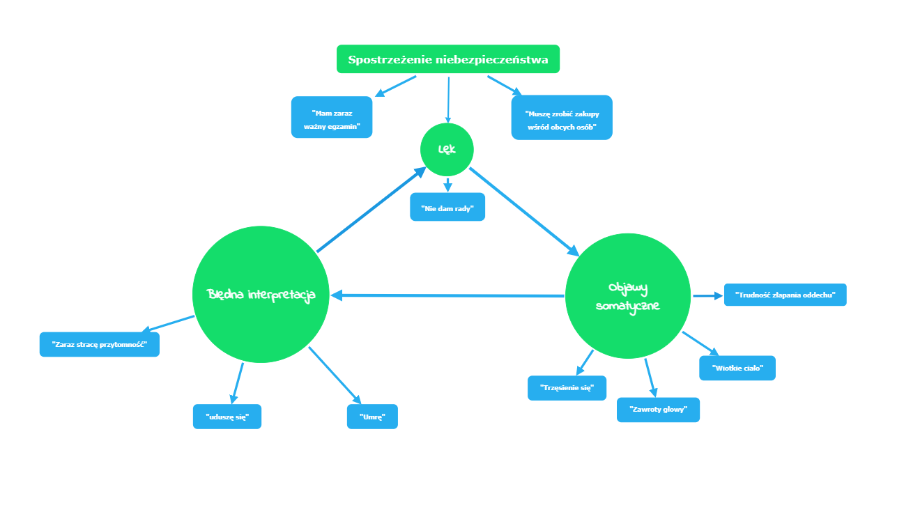

W tych czasach często spotykamy się z wydarzeniami, w których nie czujemy że
to my mamy nad tym wszystkim kontrole. Niestety jako ludzie borykamy się z
wieloma stresującymi dla nas sytuacjami czy też z różnymi fobiami. Czujemy
strach, lęk, obawy, które hamują nas przed dokonywaniem decyzji oraz
działaniem. Te czynniki wywołują atak paniki, po którym człowiek zaczyna się
bać lęku, który nie tylko nie mija, ale eskaluje. W przypadku nieleczonych
ataków paniki może dojść do rozwoju kolejnych zaburzeń takich jak agorafobia,
depresja, zachowania autodestrukcyjne, a nawet niestety prowadzić do prób
samobójczych. Na tej stronie dowiesz się informacji takich jak czym ataki paniki są,
czym są wyłowywane oraz jak sobie z nimi radzić i pomóc bliskim którym zdarzają się ataki paniki.
1) Co to jest lęk i jak na nas wpływa?
Lęk, według wielu psychologów, zostaje człowiekowi wszczepione wraz z
urodzeniem się. Jest za to odpowiedzialny tak zwany uraz narodzin.
To sposób reagowania organizmu na potencjalne niebezpieczeństwo objawiające
się jako niepokój, uczucie napięcia, skrępowania, zagrożenia.
Jest normalnym zjawiskiem, jednak może stać się problemem gdy:
- Zdarza się to zbyt często<;/li>
- Uaktywnia się w nieadekwatnych sytuacjach;
- Trwa długo;
- Powstrzymuje nas przed robieniem rzeczy, które chcemy robić;
- Zakłóca funkcjonowanie w życiu codziennym;
Nasz organizm funkcjonuje na zasadzie “akcji i reakcji”. Czując
niebezpieczeństwo układ hormonalny wytwarza m.in. adrenalinę, która
transportowana przez układ krwionośny przygotowuje nas do działania;
ucieczki, walki czy zamrożenia. Jest mechanizmem przetrwania naszego
organizmu, dzięki któremu możemy uratować nasze życie.
Zdarza się że nasza głowa płata nam figle, dostajemy sprzeczne sygnały, które
nie pokrywają się z rzeczywistością, przez co wydaje nam się że jesteśmy w
niebezpieczeństwie. W tym momencie zaczyna się reakcja lękowa.
Długotrwały lęk może również mieć negatywny wpływ na zdrowie psychiczne i fizyczne.
Może prowadzić do różnych negatywnych skutków dla zdrowia, w tym:
- Zmiany hormonalne - Stres i lęk mogą wpływać na poziomy hormonów w organizmie, w tym kortyzolu (hormonu stresu) oraz adrenaliny, co może prowadzić do długotrwałego stanu napięcia i przemęczenia.
- Zaburzenia snu - Lęk może prowadzić do trudności z zasypianiem, utrzymaniem snu lub do koszmarów sennych, co może wpływać na jakość snu i ogólną regenerację organizmu.
- Izolacja społeczna - Często się zdarza że lęk doprowadza do unikania sytuacji społecznych, co może prowadzić do izolacji społecznej i problemów z relacjami interpersonalnymi.
- Zaburzenia psychiczne - Długotrwały lęk może przyczynić się do rozwoju zaburzeń psychicznych, takich jak zaburzenia lękowe (np. fobia społeczna, zaburzenie obsesyjno-kompulsywne, zaburzenie lękowe uogólnione) oraz depresja.
- Problemy zdrowotne - Osoby z chronicznym stresem lub lękiem mogą być bardziej narażone na problemy zdrowotne, takie jak choroby serca, nadciśnienie, choroby układu pokarmowego, osłabienie układu odpornościowego oraz zaburzenia snu.
3) Czym jest atak paniki?
Atak paniki inaczej określany jako napad lęku. Są
jednym z najczęściej występujących zaburzeń lękowych, tuż po zespole lęku
uogólnionego oraz fobii społecznej. Jest to nagłe i intensywne uczucie
niekontrolowanego lęku lub strachu, które może nastąpić w nieoczekiwanym
momencie oraz bez wyraźnego powodu i bardzo szybko osiąga swoje
maksimum. Zwykle ataki paniki w ciągi 2-15 minut osiągają swoje apogeum, po
czym stopniowo występują, aż całkowicie miną. Ich czas może się różnić od
jego nasilania, a czas od pierwszego objawu do jego najwyższego punktu może
mijać od kilku minut do 30 minut. Czasami nawet zdarza się że może trwać aż
do dwóch godzin.
2) Rodzaje ataków paniki i skąd się biorą? Wyróżniamy trzy rodzaje napadów
lęku:
- sytuacyjne (sygnalizowane): atak paniki powstaje w odpowiedzi na bodziec z
zewnątrz, np. fobia społeczna.
- spontaniczne (niesygnalizowane): napad lęku nie jest poprzedzony żadnym
bodźcem z zewnątrz.
- nocny atak paniki: oznacza wybudzenie się ze snu w trakcie trwania ataku
paniki i nie różni się niczym od tego, który dzieje się w czasie funkcjonowania.
Napady paniki występują u około 9% populacji. Pojawiają się na różnych
etapach życia, gdzie dwukrotnie częściej chorują kobiety niż mężczyźni. Do
pierwszych epizodów możemy doświadczyć w dzieciństwie, natomiast
przyczyny ataków paniki nie są do końca znane. Nie można ich przewidzieć,
zapobiec im czy też całkowicie ich uniknąć, a nieleczone zaburzenie przybiera
postać chroniczną. Natomiast możemy wyróżniono najczęstsze czynniki
sprzyjające wystąpieniu paniki:
- czynniki psychologiczne: silny lęk przed wystąpieniem lęku, neurotyczność;
- czynniki środowiskowe: traumatyczne wydarzenia, życie w ciągłym stresie,
zmęczenie;
- czynniki biologiczne: nadczynność tarczycy, hipoglikemia;
- czynniki genetyczne, np. dziedziczność ChAD;
- uogólnione zaburzenie lękowe (GAD);
- zaburzenia obsesyjno-kompulsywne (OCD);
4) Błędne koło paniki
Wszystko zaczyna się od stresującej sytuacji (np. niepewna sytuacaj w rodzinie, egzamin) i pojawia się czynnik wyzwalający przez który czujemy się
nieswojo, dziwnie i od tego zaczyna się pierwszy epizod ataku paniki.
Po tym jesteśmy bardziej nerwowi, coraz bardziej zaczynamy obserwować
otoczenie w myśli że znajdziemy jakiekolwiek zagrożenie - zaczyna działać
selektywna uwaga
Gdy dochodzi do sytuacja, w której zostajemy sami bez osób zaufanych, które
byłyby w stanie nam pomóc, pojawia się lęk - zaczyna się błędne koło

Odczuwamy wtedy różnego rodzaju objawy somatyczne np. trudności z
złapaniem oddechu. Dochodzi wtedy do błędnej interpretacji i zaczynamy
myśleć: "Umieram", "Zaraz stracę przytomność".
A skoro tak zaczynamy się zachowywać- mamy wtedy do czynienia z
zachowaniami zabezpieczającym: wzywamy karetkę, uciekamy do domu a z
czasem unikamy co zaczyna z czasem eskalować i pochłaniać kolejne nasze
codzienne czynności w życiu Właśnie nad takimi zachowaniami trzeba
pracować aby w końcu móc złapać za stery i odzyskać kontrole nad własnym
życiem, dzięki czemu wrócimy do normalnego funkcjonowania bez
niepotrzebnego lęku, który nam to wszystko uniemożliwia.
5) Objawy ataków paniki
Silny napad lęku może wystąpić w dowolnym czasie oraz miejscu przy który
towarzyszą co najmniej cztery objawy somatyczne lub poznawcze m.in.:
- duszności, problemy z oddychaniem;
- ból w klatce piersiowej;
- zawroty oraz ból głowy;
- pocenie się;
- kołatanie i ,,zamieranie” serca;
- drżenie lub mrowienie rąk oraz całego ciała;
- uczucie omdlewania;
- nudności, wymioty, bóle brzucha;
- uderzenia gorąca oraz zimna, naprzemiennie;
6) Czym się różni atak paniki od nasilonego lęku?
Objawy ataków paniki jak i
lęku są podobne, przez co często trudno je rozróżnić. By móc je łatwiej
odróżnić można:
- Napad lęku zwykle pojawia się jako reakcja na konkretny bodziec lub
sytuację np. telefon w środku nocy, natomiast ataki paniki najczęściej
mogą wystąpić bez konkretnego wyzwalacza (zagrożenia).
- Symptomy ataku paniki są intensywne i niepokojące. Objawy lęku mają
natomiast różną intensywność, od lęku łagodnego do ciężkiego.
- Sygnały ataku paniki bardzo szybko się nasilają, podczas gdy oznaki lęku
pojawiają się stopniowo w jakimś przedziale czasowym.
- bjawy ataku paniki znikają po kilku, kilkudziesięciu minutach,
natomiast lęku może utrzymywać się przez długi czas.
7) Jak pomóc sobie i drugiej osobie z atakami paniki
Aby pomóc drugiej osobie z atakiem paniki, warto zachować spokój i podjąć
następujące kroki:
1. Spokojne podejście: Przystąp do osoby z empatią i spokojem. Nie wyrażaj
niepokoju czy zaniepokojenia, co może pogorszyć sytuację.
2. Zaproponuj pomoc: Pytaj delikatnie, czy osoba potrzebuje pomocy. Pozwól
jej wyrazić swoje uczucia i potrzeby.
3. Skoncentruj się na oddychaniu: Zachęć do powolnego i głębokiego
oddychania. Wspólnie skupcie się na spokojnym oddychaniu, co może pomóc
złagodzić objawy.
4. Pomoc w przemieszczeniu: Jeśli to możliwe i bezpieczne, pomóż jej
przenieść się do spokojniejszego miejsca. To może pomóc w zmniejszeniu
bodźców wywołujących atak.
5. Rozmowa i słuchanie: Jeżeli osoba chce rozmawiać, bądź otwarty na jej
słowa. Słuchaj uważnie i unikaj udzielania rad czy oceniania.
6. Oferuj wsparcie: Zapytaj, czy osoba chce, abyś pozostał/a przy niej, czy może
potrzebuje pomocy w skontaktowaniu się z kimś bliskim.
7. Unikaj forsowania: Nie naciskaj na osobę ani nie wymuszaj działań, które
może odczuwać jako niekomfortowe. Szanuj jej granice. W razie wątpliwości
lub gdy ataki paniki są częste, zachęć tę osobę do skonsultowania się z
profesjonalistą.
W przypadku ataku paniki możesz zastosować kilka technik:
1. Oddychanie głębokie: Skoncentruj się na spokojnym, głębokim oddychaniu.
Wdychaj powoli przez nos, zatrzymaj oddech na chwilę, a następnie powoli
wydychaj przez usta.
2. Skupienie uwagi: Próbuj skierować swoją uwagę na coś innego niż atak
paniki. Może to być liczenie oddechów, powtarzanie spokojnych słów w
myślach lub skupienie się na konkretnym obiekcie w otoczeniu.
3. Akceptacja uczuć: Nie walcz z uczuciem paniki, ale akceptuj je. Pamiętaj, że
atak paniki jest czasowy i minie. Staraj się przyjąć te uczucia z zrozumieniem.
4. Ruch i aktywność: Delikatne ćwiczenia fizyczne, jak spacer czy rozciąganie,
mogą pomóc w rozładowaniu napięcia i zmniejszeniu objawów ataku.
5. Znajdź bezpieczne miejsce: Jeśli to możliwe, przesuń się do spokojnego i
bezpiecznego miejsca. Czasem zmiana otoczenia może pomóc w zapanowaniu
nad atakiem. Jeśli ataki paniki są częste, warto skonsultować się z
profesjonalistą, takim jak terapeuta czy psychiatra, aby otrzymać odpowiednie
wsparcie i techniki radzenia sobie.